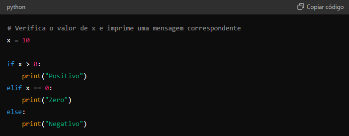

Instalação
A instalação de Python é relativamente simples e pode ser realizada tanto em sistemas Windows, macOS quanto Linux. Para iniciar, é necessário baixar o instalador diretamente do site oficial (python.org). Durante a instalação em Windows, é importante marcar a opção "Add Python to PATH" para garantir que o Python seja acessível pelo terminal.
Configuração
Após a instalação, você pode verificar se o Python foi instalado corretamente abrindo o terminal (ou Prompt de Comando no Windows) e digitando:
Além disso, é recomendável instalar um ambiente virtual para gerenciar as dependências de diferentes projetos de forma isolada. Isso pode ser feito com:
Vantagens
Sintaxe Simples e Clara: Python é conhecido por sua legibilidade e simplicidade, o que facilita o aprendizado e o desenvolvimento rápido.
Grande Comunidade e Suporte: A linguagem tem uma comunidade ativa que contribui com bibliotecas, ferramentas e suporte técnico.
Versatilidade: Python pode ser usado para desenvolvimento web, análise de dados, automação de tarefas, inteligência artificial, entre outros.
Bibliotecas Extensas: Existe uma vasta quantidade de bibliotecas para praticamente qualquer tipo de aplicação.
Desvantagens
Desempenho: : Python é uma linguagem interpretada e, por isso, pode ser mais lenta em comparação com linguagens compiladas como C ou Java.
Gerenciamento de Memória: Python pode não ser a melhor escolha para aplicações que exigem um gerenciamento de memória muito eficiente.
Uso de Recursos: Por ser interpretada, Python tende a usar mais recursos computacionais.
Aplicações
Desenvolvimento Web: : Frameworks como Django e Flask permitem o desenvolvimento de aplicações web robustas e escaláveis.
Ciência de Dados: Com bibliotecas como Pandas, NumPy e Matplotlib, Python é amplamente utilizado em análise de dados e machine learning.
Automação de Tarefas: Python pode automatizar tarefas repetitivas, como manipulação de arquivos, scraping de websites, entre outros.
Inteligência Artificial e Machine Learning: Ferramentas como TensorFlow e PyTorch permitem a criação de modelos de IA complexos.
Conceitos Básicos da Linguagem
Estrutura do Programa Um programa em Python é composto por um ou mais módulos, funções e classes. O código geralmente começa com as importações necessárias, seguido pela definição de funções e classes, e, por fim, o código executável.
Variáveis e Seus Tipos
Python é uma linguagem de tipagem dinâmica, o que significa que o tipo da variável é inferido no momento da atribuição. Exemplos de tipos básicos:
Operadores
Python suporta uma variedade de operadores, incluindo:
Aritméticos: `+`, `-`, `*`, `/`, `**` (exponenciação).
Comparação: `==`, `!=`, `>`, `<`, `>=`, `<=`
Lógicos: `and`, `or`, `not`
Estruturas de Controle
Condições (if, elif, else)
Laços(for,While)
Exemplos de Programas
Calculadora Básica: Download
Jogo de Adivinhação: Download